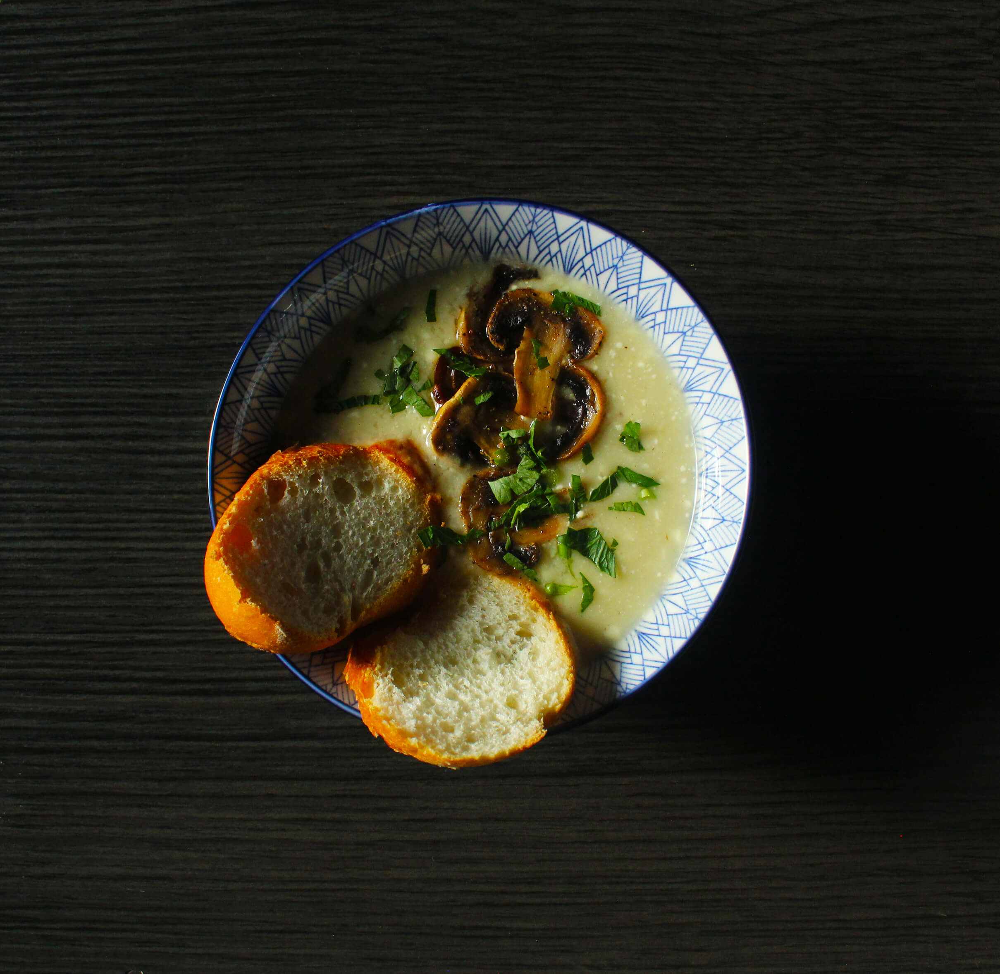
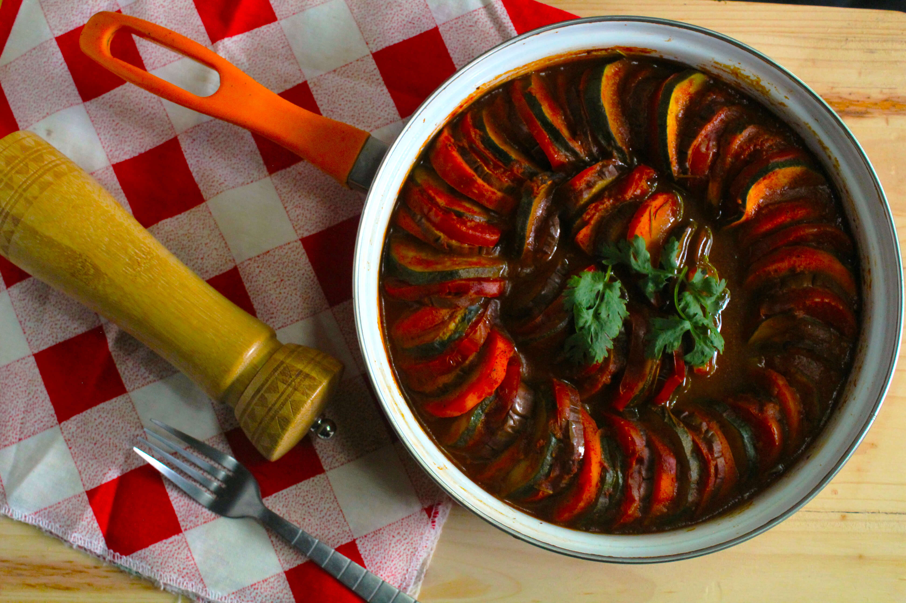
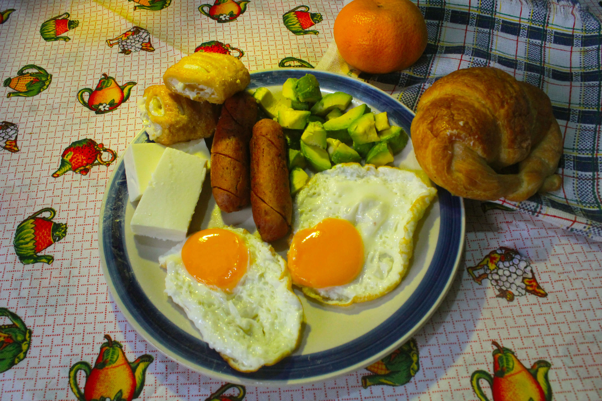
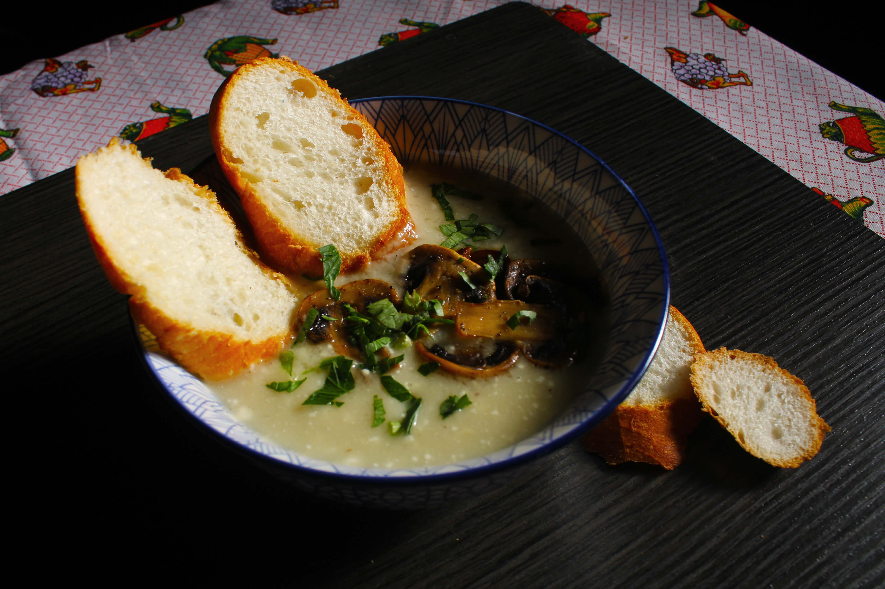
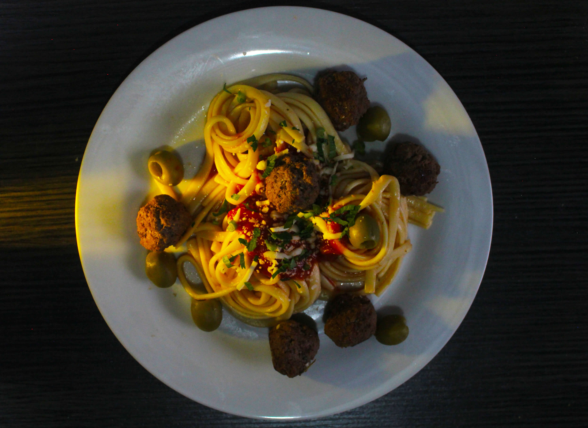
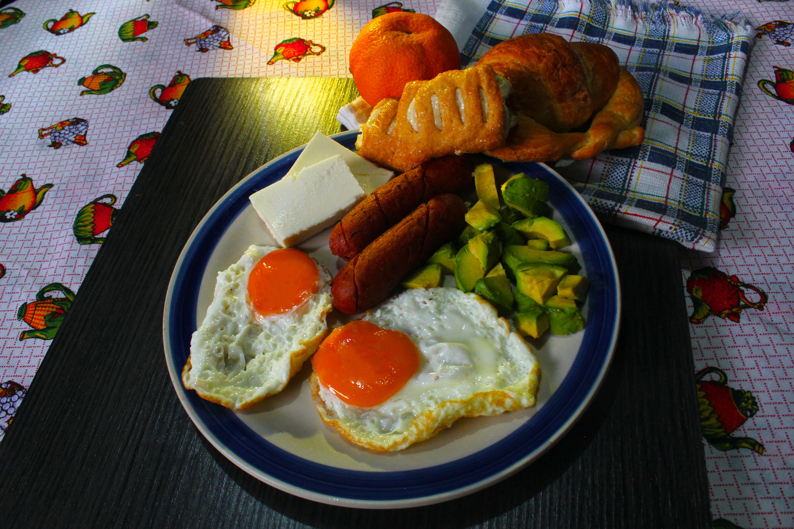
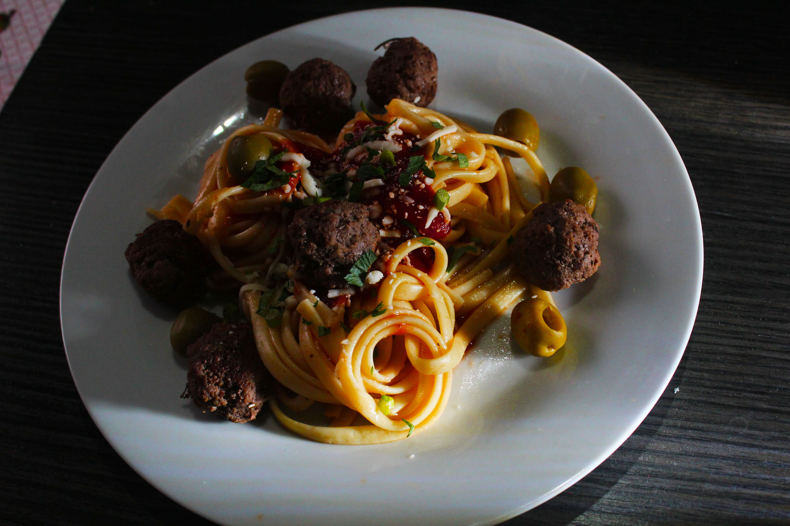

Alimentos
Esta serie reúne composiciones creadas para resaltar la textura, el color y la forma de diferentes alimentos. Cada fotografía busca mostrar la identidad de los ingredientes y su atractivo visual mediante una iluminación cuidada y una disposición equilibrada. El objetivo de esta sección es presentar imágenes que transmitan orden, frescura y claridad, destacando los elementos esenciales de cada plato.






